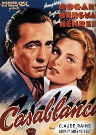

Donald Hernandez's Cinema Showcase
Explore Classic Films and Legendary Actors
- Casablanca
- Gone with the Wind
- The Godfather
- Citizen Kane
- The Wizard of Oz
- Audrey Hepburn
- Humphrey Bogart
- Marilyn Monroe
- James Stewart
- Elizabeth Taylor

This video showcases scenes from iconic classic movies, highlighting moments that have shaped the landscape of cinema.
This audio track features famous movie scores from classic films, immersing the listener in the auditory history of cinema.
For more information on classic films, visit Classic Cinema Archive.